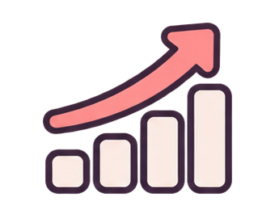

新加坡｜ATM 關閉
Choi、LohDBS 客戶 2015–2017 年資料；受影響客戶的數位交易與電子支付使用增加。
方法 ATM 關閉事件｜銀行交易紀錄
Wiki 精讀：Choi、Loh ↗
金融科技研究簡報
比較新加坡、西班牙、巴基斯坦與越南研究：客戶何時開始使用，又為何持續使用數位銀行服務？
金融科技 LLM Wiki｜研究整理：2026-11-16
方向鍵或空白鍵開始 →
研究範圍
從線上查餘額，到轉帳、繳費與自動付款；研究測量的是使用行為或接受度，各篇口徑不同。
研究對象包含傳統銀行的數位通路與數位銀行服務；以下逐頁標明市場、樣本與方法。
通路變動
新加坡 DBS 客戶遇到 ATM 關閉後，數位交易如何改變？
使用順序
西班牙 3,005 位消費者先用哪些線上服務？
採用條件
巴基斯坦非使用者與越南既有使用者，各受哪些因素影響？
四篇研究的應變項不同：實際交易、服務使用範圍、採用意願與服務接受度，不能視為同一個指標。
證據地圖
DBS 客戶 2015–2017 年資料；受影響客戶的數位交易與電子支付使用增加。
3,005 位消費者調查；線上查餘額等資訊服務，通常先於轉帳等交易服務。
卡拉奇 208 位伊斯蘭銀行客戶；技術自我效能等因素與採用意願相關。
疫情期間 779 位數位銀行使用者；感染風險感受與接受度關聯最強。
西班牙｜3,005 位消費者調查
對線上服務種類的認知，是研究分析的採用條件。
查餘額、讀取銀行訊息，屬於資訊型服務。
轉帳、付款等操作通常在資訊查詢之後出現。
安全感與服務認知，和使用服務種類較多有關。

原文數字：線上銀行使用者中，68.72% 查餘額，51.13% 付款或轉帳。比例的分母是線上使用者，不能讀成全體消費者採用率。論文原文 ↗
實體通路變動｜不同研究設計
受影響客戶的 ATM 使用距離平均增加約 100 公尺；數位平台、電子轉帳、自動付款使用上升。此數字是距離變化，並非交易增幅。
Choi、Loh 來源筆記 ↗Carbo-Valverde 等人同時分析服務認知、安全感與分行關閉；其資料顯示前兩者和線上服務使用範圍有關。
Carbo-Valverde 等來源筆記 ↗巴基斯坦與越南｜兩種問卷樣本
相對優勢、相容性、複雜度與技術自我效能，均與數位服務採用意願有關。
Shaikh 等人特別指出技術自我效能的作用；研究測量的是問卷意願，不是後續真實交易。
疫情期間，感染風險感受與數位服務接受度的關聯最大：標準化係數 β＝0.291。
越南模型中，努力期望 β＝0.228，績效期望 β＝0.181，信任 β＝0.164；均為模型估計值。
越南研究的「風險」指 COVID-19 感染風險；兩篇均為問卷分析，係數不可跨研究直接比較。巴基斯坦來源 ↗ 越南來源 ↗
四篇研究的適用範圍
DBS 的 ATM 關閉與交易紀錄，可估計該事件下的通路替代；市場支付習慣可能影響外推。
3,005 人資料呈現資訊型到交易型服務的順序；並非追蹤每位客戶的完整生命週期。
208 位卡拉奇伊斯蘭銀行非使用者的意願，不能直接預測其他銀行客戶的實際使用量。
779 位既有使用者在疫情期間受訪；感染風險的效果可能隨情境改變。
依據研究形成的產品假設
首頁先露出查餘額：觀察新用戶能否完成首次查詢；依據西班牙研究的資訊型服務順序。
查詢後提示轉帳：追蹤從查詢到首次交易的轉換；依據西班牙研究的使用路徑。
交易流程提供練習與求助：觀察完成率和求助率；依據巴基斯坦研究的技術自我效能。
情境化說明安全措施：測試理解程度與信任；依據西班牙與越南研究中的安全感及信任因素。
來源與延伸閱讀
新加坡 DBS，2015–2017 年交易資料；本地 PDF 為 2021 工作論文版，期刊線上發表於 2023 年。
西班牙，3,005 位消費者調查；隨機森林與因果森林分析線上銀行使用。
巴基斯坦卡拉奇，208 位伊斯蘭銀行非使用者；研究數位服務採用意願。
越南，疫情期間 779 位既有使用者；以結構方程模型分析服務接受度。
共同線索：可接觸的服務、可完成的操作、可理解的安全措施，需要依當地客群再測試。